日立風流物/茨城県日立市
今回は祭りモノです。 日立風流物という超絶のからくり屋台がある。 このからくり屋台の存在を知ったのは数年前に開催されたとあるからくり展だった。 このからくり展にはからくり人形に混じって幾つかのからくり屋台が紹介されていた。 その中に見なれない山車の模型があった。 それは何とも不思議なカタチをした山車で正面には家のようなカタチをした箱が幾つか重なって並んでいる。 さらに裏側はバルセロナのサグラダファミリア教会のような不思議なカタチ。 木組みを布で覆ってあるのだろううが、正面のかちっとつくってある家型に比べて何ともアンフォルメルな感じが対照的でユニークだ。 かなり変てこな容姿に一目見ただけでもう釘付け。 うっとりしながら見ていると、何とからくり屋台の公開実演があるという。 はしゃぐチビッコ達に混じりかたずを飲んで実演を見る。 いよいよ実演が始まった・・・おおおっこれはっ！・・・凄い、凄すぎる！ からくり屋台の最終形態とでもいうべき究極のギミックが採用されている！ 絶対ホンモノを見に行こうと心に誓いました。
・・・と言う訳でここは日立市のさくらまつりの会場。 この祭りのメインイベントが日立風流物の奉納公開なのだ。 日立市の駅前通りを歩いていると、向こうから見えて来ました。 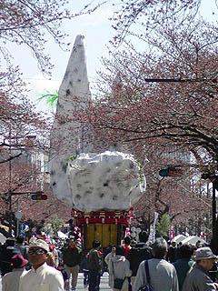 これが、日立風流物の後ろ姿である。 モコモコとした雲の上にガウディの塔が建っているような何ともユニークな形状である。 満開の桜の樹のボワーっとした感じによく合っている。 で、こちらが正面。 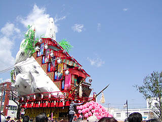 山車というより家が5つ並んでいるような形状だ。 イメージとしては山を背にした城をイメージしているそうだ。 山車としては地味と思われる方もいらっしゃるかもしれない。しかしこの後、そりゃあ凄い事になりますから、もうちょっと待っててね。 もともとこの日立風流物は宮田風流物と呼ばれ、江戸時代の中頃に操り人形を山車に付けた形で始まる。 その後、明治辺りには現在の風流物に近い形になったという。 この山車は4町が持ち回りでそれぞれの山車を出すのだが、まつり本部で売られていた絵葉書を見ると4つとも同じような形態をしている。 私が訪れた年（2003年）は本町の山車だった。 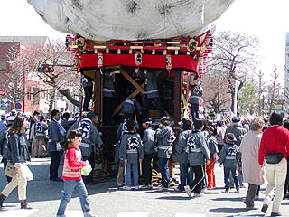 囃子方が10人、作者と呼ばれる人形操者が約40人この山車に乗り込む。 そろそろ始まるようなので正面に移動する事にしよう。 正面には既に沢山の観衆が陣取り今や遅しと「その時」を待っている。 その中に陣取り待つ事数分、場内のアナウンスがあり、お囃子が流れる始め、いよいよ日立風流物がその全容をあらわそうとしている。 あ、撮影場所の関係からメガネスーパーばっかりでスミマセン。 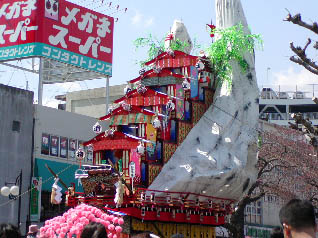 まず最初に一番下の館の扉の様なモノが手前に倒れる。
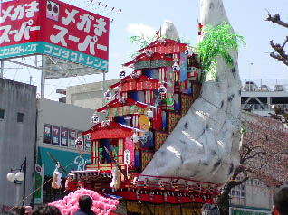 次に上3層分の館が上にせりあがる。カグラサンというそうだ。
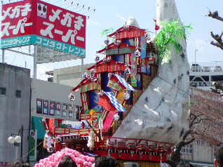 そしていきなり下の館から順々にカパッと左右に開いていくのだ！
あまりの急転直下の展開にどよめく観衆。さらに変身は続く。 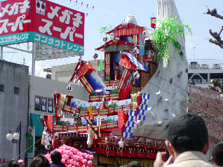 下から順に次々と館が割れていく。中には人形がセットされている。
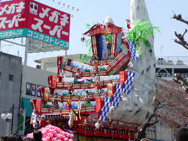 180度開いた館はそのままステージに変身する。
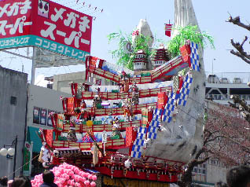 上３層分の館は競り上がった分だけステージが広い。
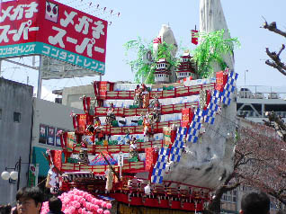 つまり、上の方が幅の広い逆三角形型の雛壇になるのだ。
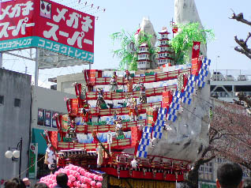 最後に最上部の五層と三層の建物がスルスルっと延びて、変身完了。
からくり山車というと精々人形が山車の上で踊ったりする程度のものかと思っていた私の甘い考えを根底からひっくり返して叩き潰して薄く伸ばして微塵切りにして熱湯で10分間煮てくれたようなショッキングな変身であった。 まるで合体ロボットの変身シーンみたいだったぞ！ というわけで通してみるとこんな感じ。 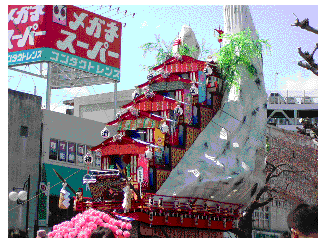 しかし。 これだけで終わっては屋台として国指定重文第一号の名が廃る。 これからが本番なのだ。 雛壇に配された人形がおもむろに動き出す。 演目の大坂夏の陣の始まりである。 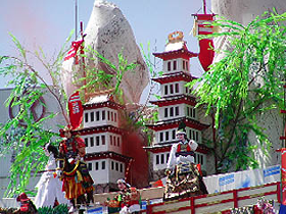 いきなり城から煙があがったと思ったら、もうそこは即戦闘モード。 様々な侍達が戦を始める。 人形が一斉にカクカク動いている。 暫く眺めていると、何と鉄砲隊の銃声が聞こえて来た。 さらに弓を引き矢をうち始めたではないか！ 打放たれた矢は観客の間にポトリポトリと落下し、皆争ってこれを拾っている様子。縁起物なのだろうか。 種子島はさすがに実弾発射！というわけにはいかず、空砲のようだが、事情さえ許せば絶対実弾が撃てる筈の技術レベル。 矢と弾が飛び交かい、刀を振り回し馬が走る。大坂夏の陣かくのごとし、といった塩梅である。 戦モード全開の様子はこちら。 結局ストーリーの様なモノはあったのかどうか良く判らなかったが、大喝采の中大坂夏の陣の演目は終了。 いやいや面白かった。と、思ったらまだまだ終わらない。
場内アナウンスが流れ、裏側のガウディの方で演目が行われるらしい。 慌てて裏側にまわろうとすると、何と山車自体がズズズズッと回転し始めた。 まさに山、動いたり！！！ このガウディ部分を裏山というそうだ。 180度回転して観衆の目の前に聳え建つ裏山。おもむろに下の半円形の部分が下がりステージになる。 演目は日立の神話だそうで。 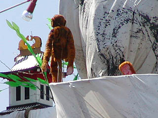 山の上の方からサルが現れてセカンドステージ開幕。 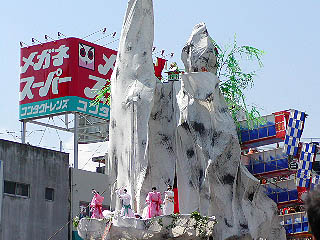 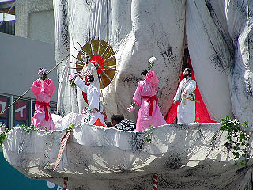 幕の隙間から何体かの人形が現れストーリー仕立ての人形劇が始まった。 内容は・・・よく判りませんでした。 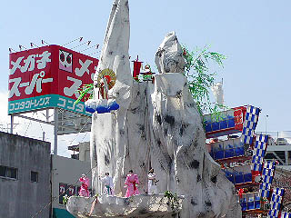 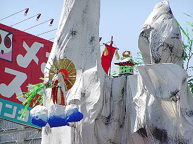 表山の戦シーンほどアグレッシブな動きはない。 表山がギミックを前面に出した見世物的な内容だったのに対し、裏山はストーリー性に主眼を持った叙情的な人形劇だったように思えた。 一番のクライマックスは主人公と思しき人形が雲に乗ってビューンと山の上に競り上がっていくシーン。 あと、山の上から蛇が垂れ下がって暴れるシーンがアクロバティックで結構よかったです。 これで日立風流物の一連の出し物はお終い。 勿論これ以外にも山車の本来の仕事である曵き廻しもある。 曵き廻しは見られなかったが、これもまた見事なものだったろう。遠目に見たら山そのものですからねえ。 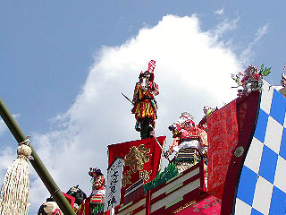 その特異なフォルムから興味を持った日立風流物だが、その見事な変身っぷり、そのからくり人形の精巧さ、しかも裏山を使ってもう一幕設けるこれでもかというサービス精神に全身痙攣、しびれっぱなしでした。 個人的にではあるがキングオブ山車の称号を贈らせていただく。 毎年4月には4つあるいずれかの風流物が公開されるのでキングオブ山車の勇姿をご覧になりたい方は是非、日立に行くべし！
2003.４.
追記 2004.4. また行っちゃいました・・・ 今年（2004）年は北町の山車である。 外観は差程変わらないが微妙な色合いやデザインが去年の本町のものとは違っている。 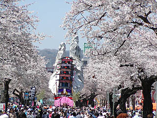 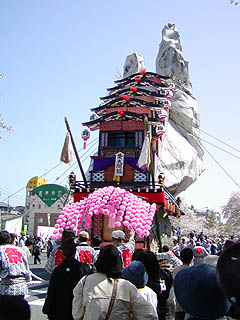 例によって屋型がバカッと割れてステージが現れる。 見る側としてはここが一番盛り上がる。 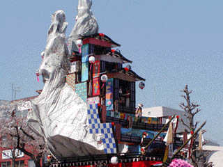 ↓ 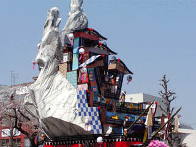 ↓ 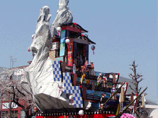 ↓ 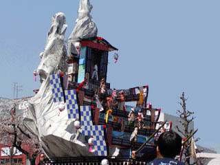 ↓ 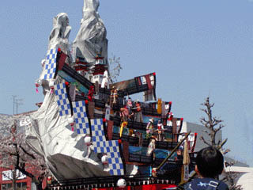 さて、無事ステージが出来上がり、武士達がバトルを始めた。今年の出し物は太閤記。 ネタとしてはやはり戦国モノが多いのだろう。 これだけの技術があったら「白い巨塔」とか「江夏の21球」とかあってもいいと思うんですけど・・・ 去年同様、弓打ちのギミックあり、鉄砲打ちのギミックあり、てんこ盛りの内容であった。 見どころは戦国武将が戦った後、いきなり武将がぐるっと反転し、奇麗なお姫さまに変身するところ。 荒っぽいオトコ達の戦いから場面は一転してギャル達の優雅な舞い。
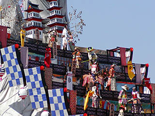→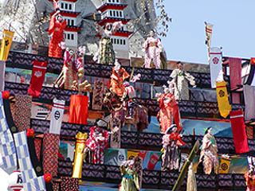
裏山の出し物は花咲爺。 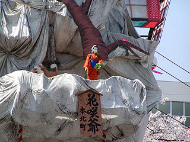 勿論爺さんが花を咲かせるシーンが盛り上がってました。 今年も楽しませてもらいました。
注：当ページの動画再生にはQuickTimeが必要となります。ダウンロードはこちら
珍寺大道場 HOME